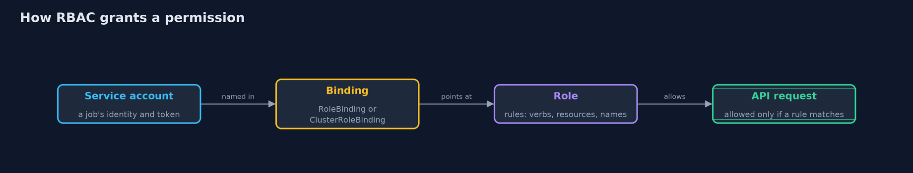
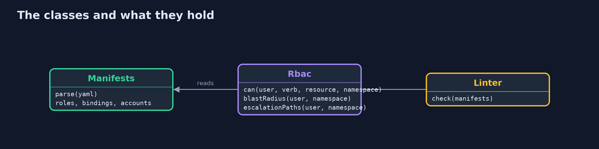
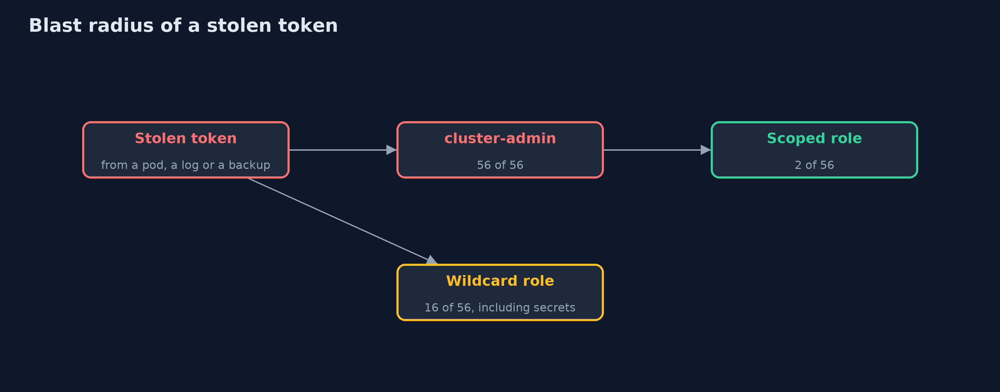
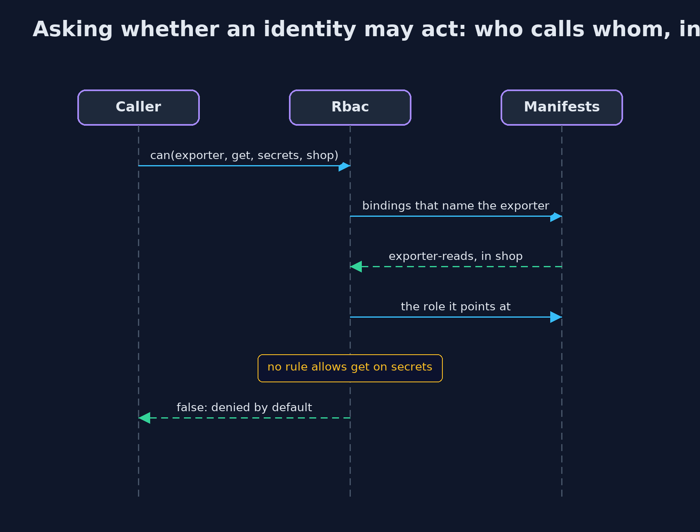

Least Privilege with Kubernetes RBAC
src/main/java/com/jk/explore/security/leastprivilegek8s/
├── LeastPrivilegeK8sDemo.java Runs the online store story in five numbered acts, reading the real manifests in infra/rbac and printing exact, repeatable results
├── Linter.java Flags the RBAC habits that cause incidents: cluster-admin bindings, wildcards, escalation verbs and automounted tokens
├── Manifests.java The parts of Kubernetes manifests that RBAC cares about, read from YAML
└── Rbac.java Answers the question `kubectl auth can-i` answers, from the manifests alone: may this service account do this verb on this resource in this namespace?
Kubernetes RBAC denies everything until a rule allows it, and the damage from a stolen token is set by the rules you wrote: cluster-admin, wildcards and the create-pods and bind verbs are where least privilege is lost.
In Kubernetes every program that talks to the cluster has an identity, usually a service account, and a token that proves it. RBAC (role-based access control) decides what each identity may do. It is deny by default: nothing is allowed until a Role (rules in one namespace) or a ClusterRole (rules for the whole cluster) says so, and a RoleBinding or ClusterRoleBinding gives the role to an identity. A rule lists verbs (get, list, create, delete ...) on resources (pods, secrets ...), and can name the objects it covers.
This project reads real manifests, answers the question kubectl auth can-i answers, counts the blast radius of a stolen token, finds the escalation paths, and lints the manifests. The integration tests make a real cluster with kind and check that it answers exactly as the Java code does.
The idea in everyday terms
Think of the keys of a shop. A master key given to the night cleaner "to make it work" opens the till, the stockroom and the office. A key cut for the cleaner's cupboard opens one door. A key that says "all doors on the ground floor" sounds modest, until you remember the safe is on the ground floor.
The scenario
An online store runs its jobs as service accounts. A nightly export was given cluster-admin, a reporting job was given "get and list everything", and the deploy pipeline can create pods. The demo asks what each stolen token could do.
Run
./gradlew run
The demo tells the story in 5 acts, each printing exact numbers that the tests check:
| Act | What it shows |
|---|---|
| 1. The nightly job that was given cluster-admin | A stolen cluster-admin token reaches 56 of 56 things; the scoped exporter reaches 2, one named config map is readable, and secrets are not. |
| 2. The wildcard trap: read everything | A role that allows get and list on all resources sounds harmless, but it can read secrets; naming resources keeps a rule meaning what it said. |
| 3. Ways to become more powerful | The deploy pipeline has 4 escalation paths: create pods, create role bindings, bind roles and escalate roles; the exporter has none. |
| 4. A cluster-wide role through a namespaced binding | The support agent holds a ClusterRole through a RoleBinding, so it works in shop and not in warehouse, while a ClusterRoleBinding ignores namespaces. |
| 5. A linter for the habits that cause incidents | The linter finds 6 problems in the shop manifests: a cluster-admin binding, a wildcard, two escalation verbs and two auto-mounted tokens. |
Test
./gradlew test
17 tests in DemoRunsTest, KubectlInteropTest, ManifestsAndLinterTest, RbacTest. The demo and the default tests read the manifests and need nothing installed. The integration tests (tagged k8s) make a real kind cluster, compare 490 kubectl answers with the Java evaluator, and always delete the cluster.
What the simulation got right, and what it left out
The demo reads the manifests in infra/rbac and needs no cluster, so it is the same on every machine. The integration tests create a kind cluster with a generated name, apply the same manifests, ask kubectl auth can-i for 490 combinations of identity, namespace, resource and verb, and always delete the cluster.
Technologies and versions
Every version below is pinned in the project's build files and was the latest stable release when the project was built.
| Technology | Version | Used for |
|---|---|---|
| Java | 25 | the language and runtime; a Gradle toolchain finds or downloads the JDK |
| Gradle | 9.8.1 (wrapper) | build and run; nothing to install, the wrapper downloads it |
| org.snakeyaml:snakeyaml-engine | 3.2 | library the code uses |
| org.junit.jupiter:junit-jupiter | 6.1.3, set by junit-bom | JUnit 5: the tests (tests only) |
| org.junit.platform:junit-platform-launcher | 6.1.3, set by junit-bom | JUnit platform launcher, which Gradle needs to run the tests (tests only) |
| kind | 0.33.0 | makes a real Kubernetes cluster in Docker for the integration tests |
| kubectl | 1.27.2 (client) | asks the cluster auth can-i as each service account; newer than the supported skew is only a warning |
| Kubernetes | 1.37.0 (kindest/node image) | the cluster the manifests are applied to in the integration tests |
| Docker | required for the integration tests | runs the kind node |
| videokit | repository tool (tools/videokit) |
the narrated video and animation: Piper en_US-amy-medium, speed 0.8, longer pauses (the amy-slow voice) |
Learning Material
| Document | What it is for |
|---|---|
| Dependencies | what the framework and infrastructure are, and why they are here |
| Problem statement | the situation and what the project must show |
| Prerequisites | what you need to know first |
| Least Privilege with Kubernetes RBAC, explained | the acts in prose |
| Session guide | a one-hour lesson with exercises |
| Animated walkthrough | the acts step by step, narrated |
| Threat model | what is protected, who could harm it, and how, using STRIDE |
| Spec | what this project must be true of |
| Expected output | the golden demo output every test and every port checks against |
The idea in one picture
An identity gets a permission only through a binding to a role with a rule that allows it.

Where each piece sits
Manifests holds what was read; Rbac and Linter only read it.

How the data moves
Count the verb and resource pairs the identity may use.

Who calls whom, in order

Video
video/least-privilege-with-kubernetes-rbac-explained.mp4 (with .m4a audio and .srt subtitles) is built by video/build_video.sh. Rendered media is not committed.
What it costs
- Narrow roles need maintenance. Each new feature may need a new permission, so the rules need an owner and a review.
- RBAC has no deny rules. You can only leave permissions out, so one extra binding can undo careful work, and the audit has to look at all of them.
- The Java evaluator is a model. It ignores API groups, non-resource URLs, aggregated roles and groups of users, so it teaches the idea and does not replace asking the cluster.
- Real clusters add roles you did not write. Built-in and operator-installed roles also grant permissions, so check with
kubectl auth can-i --list.
When this is too much
For a throwaway local cluster, cluster-admin is fine. For anything that holds real data or is reachable by other people, give each workload its own service account, bind it in one namespace, and turn off token mounting for pods that do not call the API.
Where you have already met this
cluster-adminin tutorials, copied into production.kubectl auth can-iandkubectl auth can-i --list.- Cloud kubernetes services that map cloud identities onto service accounts.
- Reports that begin "a pod's service account token was stolen".
Where this sits
This project follows least-privilege and least-privilege-with-spring-security. The first modelled the ideas in memory, the second applied them in a Spring application, and this one applies them to the platform the application runs on.